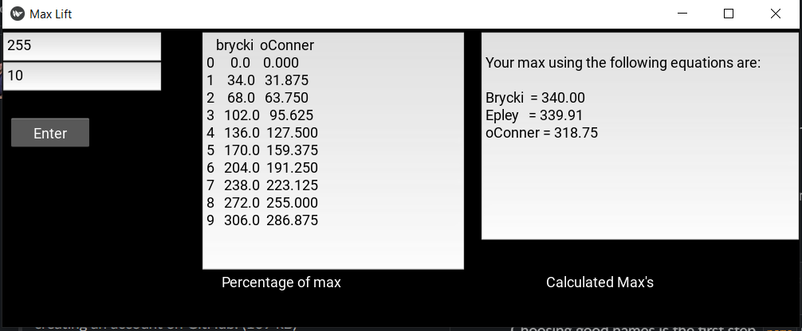

Overview
The Weight Lifting GUI App is designed to assist weightlifters in optimizing their training by providing valuable insights into their strength performance. Key Features: Input Weight and Reps: Users can input the weight lifted in pounds and the number of repetitions performed. Calculate Max: The app calculates the estimated maximum weight that the user can lift based on the input data. Percentage Calculation: Additionally, the app calculates the percentages of the estimated maximum weight, providing valuable information for planning workouts and setting goals. For instance, if you performed a bench press with 255 lbs for 10 reps, the app would utilize three popular maximum calculation equations to estimate your maximum bench press weight.
How it works
Github Project Page
Images
